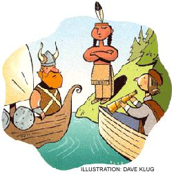

Tear marks what is believed to be the 1,000th anniversary of the landing and brief establishment of Viking settlements in Newfoundland and Labrador. So, this year Scandinavian-Americans will gain more attention than ever for Leif Eriksson Day. This holiday was deliberately set to occur on the same day in October that Italian-Americans established to honor Christopher Columbus' world-changing discovery of America in 1492.
In South Dakota, however, this same date is now also Native Americans Day. The discoveries of America by Eriksson and Columbus were, of course, discoveries of continents already inhabited by millions of people.
Which discovery of America should we celebrate? Before we decide, perhaps we should learn more about all these discoverers and their cultures.
Did you know that Iceland has arguably the oldest continuously running democracy and the oldest-living language? Or that the Norse sagas are regarded as among the greatest stories in all of world literature? Can you challenge yourself to think freshly just how daring Columbus' journey was and what an impact, good and bad, it had on world history? (By the way, did you know that Columbus came to think of the world as pear-shaped rather than round, believing that there was a great mountain bulging out in South America?)
The things to learn about the innumerable native cultures of the New World is truly a lifetime's fascinating study. Tens of thousands of years ago, their ancestors are thought to have crossed Beringia - a land-bridge that emerged from the Bering Sea during the ocean-lowering Ice Age. Far enough back, they too were discoverers of America.
Which discovery of America should we celebrate? Perhaps a little bit of all of them. Or perhaps your own ongoing and ever-compelling discovery of this great land.
- Fred Schaaf
|
 |
|
|